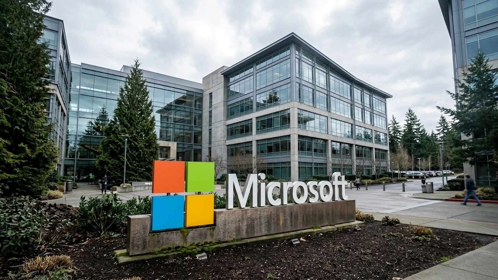

Microsoft 365 Outage Exposes the Business Risk of Shared Cloud Infrastructure
A disruption affecting Outlook, Teams, Copilot and other Microsoft 365 services showed how a failure in a shared backend can interrupt critical workflows across businesses and government agencies.

A Microsoft 365 disruption that stretched from Thursday into Friday affected Outlook, Teams, Copilot and services built on Exchange Online, interrupting communications at businesses and government agencies across several regions. Microsoft said recovery was progressing and found no indication of malicious activity. The incident showed how failures in shared infrastructure can spread across applications that users see as separate products.
Microsoft reported the issue on November 12. Users had trouble accessing Exchange Online mailboxes through Outlook on the web and desktop clients, while email delivery was delayed. Problems also reached parts of Teams, SharePoint, Copilot, Planner and Defender because some functions depend on Exchange data or authentication. Services without that dependency continued working in some cases.
The outage lasted more than 12 hours and continued into a second day. The Associated Press reported nearly 130,000 Downdetector complaints about Outlook just after 1 p.m. Eastern time, with reports later falling from that peak. Microsoft has not disclosed how many customers or users were affected, so outage-tracker reports should not be treated as a count of disrupted subscribers.
The consequences extended beyond missed email. Reuters reported communication delays at government agencies, airlines, financial firms and other businesses. Some organizations used paper records or fax as temporary alternatives. Euronext reported email disruption, Aviva activated backup arrangements for earnings calls, and Maersk warned customers about delayed updates. Other companies postponed or adjusted financial communications.
Microsoft said the incident was not caused by malicious activity. It reported that several servers failed automated health checks and that initial attempts to restore them were not immediately effective. The company paused deployments, shifted traffic away from affected infrastructure and restarted servers. It later said a broader rollout of software fixes was beginning to stabilize services.
The incident illustrates a common cloud-platform failure mode: one underlying service can support many products. Outlook, Teams and Copilot appear separate, but some functions rely on Exchange Online for mail, calendars, contacts or work data. When that dependency fails, symptoms can appear across several applications. Teams may open, for example, while calendar integration or other Exchange-dependent features remain unavailable. Organizations hosting Microsoft services on their own servers were somewhat spared, Reuters reported, underscoring the difference between cloud-hosted dependencies and locally operated systems.
That distinction matters for business continuity. A company may use several communication products but still depend on one identity system, cloud region, email backend or vendor authentication layer. Adding software does not automatically create redundancy if the backup relies on the same infrastructure. A fallback can fail alongside the primary service.
The outage also affected companies building products on Microsoft services. Reuters reported problems with Microsoft connectors used by OpenAI and Anthropic. Applications connected to a provider’s email, calendar or documents can inherit the availability risks of those systems. As businesses connect AI assistants to workplace data, an outage in the underlying source can disrupt both the assistant and the workflow it supports. TTN Finance has examined enterprise AI access controls and monitoring risks for AI agents.
The financial impact remains uncertain. Reuters cited an analyst estimate of $300 million to $500 million in global insured losses, below the estimated cost of the 2024 CrowdStrike disruption. That is not a confirmed loss total and excludes uninsured costs such as employee downtime, delayed transactions and postponed reporting. The effect on Microsoft’s own revenue is also unclear.
Microsoft’s immediate priority is full restoration and a detailed account of the cause. The company said it would provide root-cause information and defensive improvements after mitigation. Until that report appears, it would be premature to blame a specific software update or external attack.
Customers should map critical workflows to their technical dependencies. They need to know which processes require Exchange Online, which services can operate independently and how staff will communicate if cloud email is unavailable. Backup channels should be tested, not merely documented. Companies should also understand message retention, recovery of calendar and document access, and third-party services that rely on the same provider.
The outage does not show that businesses should abandon Microsoft 365 or that competitors are immune to similar failures. Large cloud providers offer scale and capabilities many organizations cannot reproduce economically. The narrower lesson is that concentration creates operational exposure. Resilience depends on designing around shared dependencies, testing recovery procedures and understanding how many critical workflows rely on a small number of providers.
Sources and methodology
Primary documents and contemporaneous reporting used for this article:
Figures are attributed to source reporting or official filings; estimates are identified as estimates, and transaction terms remain subject to stated closing conditions.